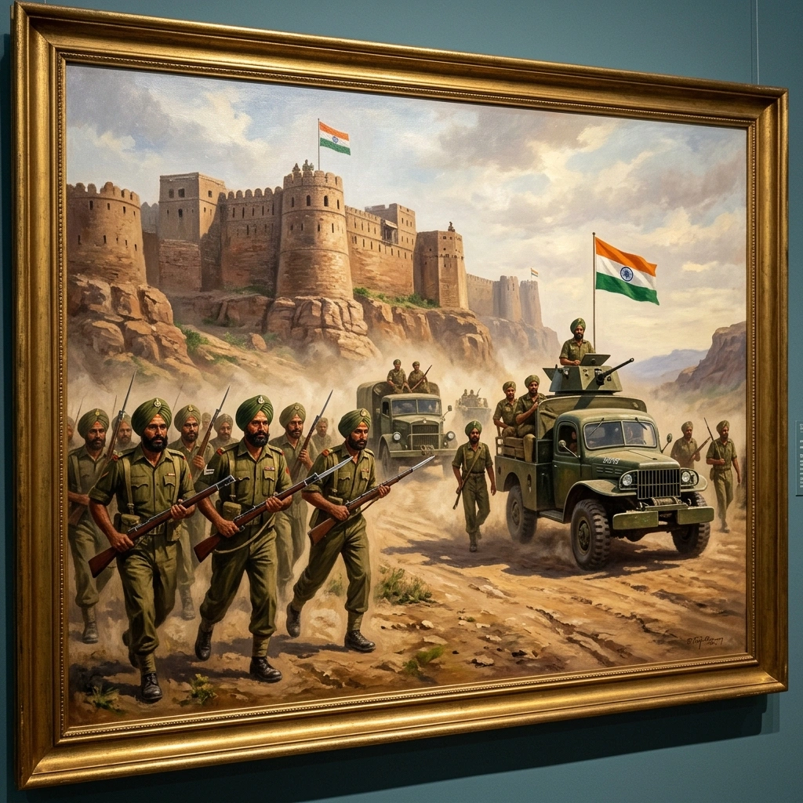

जूनागढ़ और ऑपरेशन पोलो


शीर्षक: Junagarh and Operation POLO
श्रेणी: Junagarh and Operation POLO
कलाकार: सिख रेजिमेंटal Centre
वर्ष: ऐतिहासिक
श्रेणी: Junagarh and Operation POLO
कलाकार: सिख रेजिमेंटal Centre
वर्ष: ऐतिहासिक
जूनागढ़ और ऑपरेशन पोलो
हैदराबाद की कार्रवाई से पहले, 2 सिखों ने काठियावाड़ डिफेंस फोर्स में शामिल होकर झंडा मार्च किया, जिससे जूनागढ़ का भारत के साथ एकीकरण सुरक्षित हुआ। जुलाई 1948 में, बटालियन ने नानाज में रज़ाकारों से लड़ाई की और बाद में 13 सितंबर को शुरू किए गए ऑपरेशन पोलो में शामिल हुई। जलकोट में, हवलदार बचित्तर सिंह ने मृत्युदंडनीय घावों के बावजूद वाहनों को कब्जा किया और एक गढ़ी हुई पोस्ट को शांत किया; उन्हें भारतीय सेना को प्रदान किया गया पहला अशोक चक्र प्रथम श्रेणी पुरस्कार प्राप्त हुआ। सिपाही सेवा सिंह को अशोक चक्र द्वितीय श्रेणी प्राप्त हुआ। उत्तरी क्षेत्र में, 3 सिख ने 14 सितंबर तक वाघरुल और जालना को कब्जा किया। नायक हरदयाल सिंह, जो लूटे गए सामान को वापस लेने और रजाकारों से लड़ते समय मारे गए, उन्हें अशोक चक्र द्वितीय श्रेणी दी गई। 17 सिख के तत्वों ने JAI फोर्स में दौलताबाद, औरंगाबाद, सिलोड, भोजर्डन और अजन्ता सुरक्षित किए। निज़ाम ने 17 सितंबर को युद्धविराम का आदेश दिया, और मेजर जनरल एल एद्रूस ने 18 सितंबर 1948 को औपचारिक रूप से आत्मसमर्पण किया।
हैदराबाद की कार्रवाई से पहले, 2 सिखों ने काठियावाड़ डिफेंस फोर्स में शामिल होकर झंडा मार्च किया, जिससे जूनागढ़ का भारत के साथ एकीकरण सुरक्षित हुआ। जुलाई 1948 में, बटालियन ने नानाज में रज़ाकारों से लड़ाई की और बाद में 13 सितंबर को शुरू किए गए ऑपरेशन पोलो में शामिल हुई। जलकोट में, हवलदार बचित्तर सिंह ने मृत्युदंडनीय घावों के बावजूद वाहनों को कब्जा किया और एक गढ़ी हुई पोस्ट को शांत किया; उन्हें भारतीय सेना को प्रदान किया गया पहला अशोक चक्र प्रथम श्रेणी पुरस्कार प्राप्त हुआ। सिपाही सेवा सिंह को अशोक चक्र द्वितीय श्रेणी प्राप्त हुआ। उत्तरी क्षेत्र में, 3 सिख ने 14 सितंबर तक वाघरुल और जालना को कब्जा किया। नायक हरदयाल सिंह, जो लूटे गए सामान को वापस लेने और रजाकारों से लड़ते समय मारे गए, उन्हें अशोक चक्र द्वितीय श्रेणी दी गई। 17 सिख के तत्वों ने JAI फोर्स में दौलताबाद, औरंगाबाद, सिलोड, भोजर्डन और अजन्ता सुरक्षित किए। निज़ाम ने 17 सितंबर को युद्धविराम का आदेश दिया, और मेजर जनरल एल एद्रूस ने 18 सितंबर 1948 को औपचारिक रूप से आत्मसमर्पण किया।
मोबाइल पर खोलें
अपने फोन पर इस कलाकृति को देखने के लिए स्कैन करें।